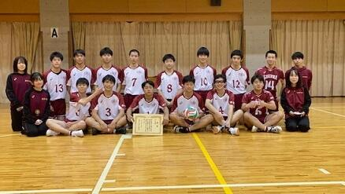
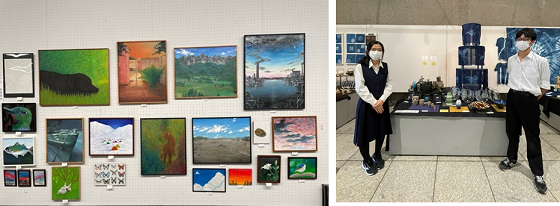
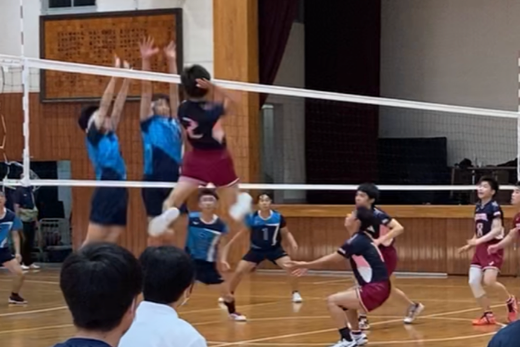
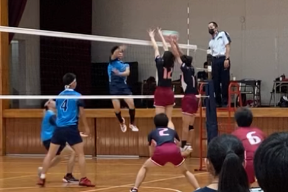
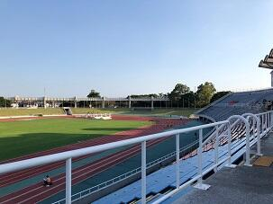

文字
背景
行間


部活動報告
美術部 学生美術展佳作受賞
 第66回全日本学生美術展に美術部の2名が佳作を受賞し、上野の東京都美術館で2月12日(土)～19日まで展示されました。応募総数は全国から6906点で佳作は1126点選ばれました。受賞作品は3月19日(土)から24(木）まで佐倉高校地域交流施設で開催されるSakurArt展（文化系部活動合同作品展）で展示します。佳作以外の出品作品や美術部の新作も展示します。
第66回全日本学生美術展に美術部の2名が佳作を受賞し、上野の東京都美術館で2月12日(土)～19日まで展示されました。応募総数は全国から6906点で佳作は1126点選ばれました。受賞作品は3月19日(土)から24(木）まで佐倉高校地域交流施設で開催されるSakurArt展（文化系部活動合同作品展）で展示します。佳作以外の出品作品や美術部の新作も展示します。 吹奏楽部 第13回 ウィンターコンサート


陸上競技部 冬季練習始
 11月の記録会を最後に今シーズンの大会・記録会の全日程終えました。修学旅行や第4回考査を終え、冬季練が始まりました。岩名運動公園や学校での練習を中心に冬休みは天台・東京大学検見川総合運動場を使って春の総体に向けての身体づくり、精神力強化をしています。新しいチームスローガンは『頭を垂れる穂は実り輝く』です。新人戦では多くの県大会出場が叶いましたが、それで驕ってはいけない、更に輝けるような個の能力を高めよう、応援されるチームになろう、そして、陸上競技だけでなく、学習面、生活面、全てを向上できるようしよう、といつも伝えています。春になれば、3年生、2年生、強くてたくましい、かつ、謙虚であり続けるチームを目指して日々努力に励んでいきます。
11月の記録会を最後に今シーズンの大会・記録会の全日程終えました。修学旅行や第4回考査を終え、冬季練が始まりました。岩名運動公園や学校での練習を中心に冬休みは天台・東京大学検見川総合運動場を使って春の総体に向けての身体づくり、精神力強化をしています。新しいチームスローガンは『頭を垂れる穂は実り輝く』です。新人戦では多くの県大会出場が叶いましたが、それで驕ってはいけない、更に輝けるような個の能力を高めよう、応援されるチームになろう、そして、陸上競技だけでなく、学習面、生活面、全てを向上できるようしよう、といつも伝えています。春になれば、3年生、2年生、強くてたくましい、かつ、謙虚であり続けるチームを目指して日々努力に励んでいきます。
天文気象部 部分月食観測
11月19日(金)に部分月食の観測会を行いました。今回は月の約９８％が地球の影に隠される、ほぼ皆既に近い月食でした。右下だけが細く輝き、残りの部分は赤銅色になった月は大変神秘的で、今回と同様の月食を全国で見られるのは１４０年ぶりと大変珍しく、部員達は写真撮影や双眼鏡での観測に勤しんでいました。月が薄曇に隠れる時間が長く、寒さも厳しい状況でしたが、そんなことも吹き飛ばしてしまうほど熱心に観測していました。

書道部・工芸部 令和４年度全国高文祭出場決定！
 書道部
書道部
今月行われた千葉県高等学校総合文化祭書道部門において、来年度東京都で開催される全国高等学校総合文化祭書道部門へ出品する千葉県代表生徒１４名を選ぶ審査会が行われ、本校１年矢野君の作品「臨値雨帖」が選ばれました。これから新たに出品作品を制作する予定です。
工芸部
佐賀→高知→和歌山と続いた大会ですが、次年度は東京大会です。コロナが収束することを願い、是非直接足を運んで作品をご覧いただけたらうれしいです。
男子バレー部 SAKURA Challenge Match

＜試合結果＞ 佐倉 １０－２５ 習志野
１３－２５
２３－２５
１４－２５
１４－２５
ユニフォームでの試合、県の審判員のジャッジ、アナウンスを入れたりと、公式大会に近い形で取り組み、とても収穫の多い１日となりました。 来年度以降も継続して行っていけるように、千葉県でのポジションを確立していきたいと思います。ご協力いただいた皆様、ありがとうございました。
男子ﾊﾞﾚｰﾎﾞｰﾙ部第65回東部地区大会準優勝
11月13日(土)・14日(日) 第65回東部地区大会に参加し、準優勝という結果を残すことができました。
11/13(土)
＜グループ予選＞佐倉 ２（25-17，25-20）０ 匝瑳
佐倉 １（23-25，25-11，27-29）２ 東金
→2位で決勝トーナメント
11/14（日）＜決勝トーナメント＞
１回戦 佐倉 ２（25-23，21-25，25-23）１ 東京学館
準決勝 佐倉 ２（12-25，25-22，25-17）１ 市立銚子
決 勝 佐倉 １（23-25，25-21，24-26）２ 敬愛大八日市場
選手権大会後の大会となり、チームでの課題解決状況や変化を確認できる大会となりました。予選リーグから、１戦１戦経験するごとに、精神的な成長が見られました。終盤リードされていても、粘りを見せ、勝ちきる場面も見られて、少しずつ勝利への執着も定着しつつあります。
“文武両道” “思念工夫” “挑戦と創造”を意識して、年明けの新人大会に向けて、さらなるチームの強化を目指します。応援ありがとうございました。
高文祭美術・工芸作品展
11月8日(月)工芸部と美術部が千葉県高等学校総合文化祭美術工芸作品展に参加してきました。今日から14（日）まで作品が千葉県立美術館で展示されます。お時間のある方はどうぞ足を運んで作品をご覧になってください。
陸上競技部 関東大会・県駅伝大会報告
 10/24（日）茨城県の笠松運動公園陸上競技場で関東新人が開催されました。5000mで2年高尾が出場しました。自己ベスト・入賞とはなリませんでしたが、大舞台を経験できたことは財産になったことと思います。
10/24（日）茨城県の笠松運動公園陸上競技場で関東新人が開催されました。5000mで2年高尾が出場しました。自己ベスト・入賞とはなリませんでしたが、大舞台を経験できたことは財産になったことと思います。
10/30（土）は旭市の東総運動公園陸上競技場周回コースで県駅伝大会（総体駅伝大会）が行われました。結果の方は
男子42.195km：総合27位：2時間28分06秒
女子21.0975km：総合38位相当（op出場※四街道北高と合同チームで出場）：1時間34分46秒
駅伝で学んだ事を走った選手の思い出にだけするのではなく、チームとして繋いでいけるか。秋シーズンもまもなく終わりを迎え、寒い冬が始まります。春にサクラを咲かせられるか、勝負できるチームなるためにまた明日からチームとして頑張っていきたい思います。今後とも応援よろしくお願いします。
男子ﾊﾞﾚｰ部 第74回全日本高等学校選手権大会千葉県大会二次予選報告
10月10日㈰ 選手権大会県二次予選の1回戦に臨みましたが、
佐倉 0 (19-25, 17-25 ) 2 白井 という結果に終わりました。
8月28日の一次予選（地区大会）の後、緊急事態宣言となったため、1ヶ月程度の活動停止期間を経て、2週間でのチーム作りとなりました。結果、敗戦となりましたが、一次予選からのチーム課題を意識しつつ、勝負への執念や終盤の踏ん張りが見られる内容となり、チームの変化に手応えを感じられる内容でした。今後の練習での成長が楽しみです。“文武両道” “挑戦と創造”を意識して、年明けの新人大会に向けて、さらなるチームの進化を目指したいと思います。応援ありがとうございました。

水泳部 第52回千葉県高等学校新人体育大会
9月17日㈮・18日㈯に第52回千葉県高等学校新人体育大会が千葉県国際総合水泳場において開催され、本校水泳部（渡邉・渡来）が出場しました。大会２日目は台風１４号接近の為、急な開催時間の変更があり、慌ただしさもありましたが、競技では両名とも力一杯泳ぎ切ることができました。今大会では、渡来が５０ｍ自由形で６位入賞、１００ｍ自由形で７位入賞を果たしました。これからも次の大会へ向けて練習を積んでいきたいと思います。
陸上競技部 令和３年度県新人結果報告
9月24日（金）〜26日（日）に県総合スポーツセンターで県大会が行われました。地区大会を勝ち進んだ19種目が出場しました。結果ですが、2年高尾が男1500m県10位、1年権田が男400mH11位、2年高尾が男5000m13位、2年西崎が女400m14位、2年高尾が男800m14位、2年鈴木が男やり投16位、など入賞まであと一歩という種目もありながら、県で戦う事の難しさを感じた大会となりました。また男5000mで他校の関東新人出場辞退者が出たため、繰上げで関東大会（茨城県）の出場が決定しました。少しずつチームとして成長を感じつつも、全員がもっと自主的に考えて動かなければいけないと強く感じた大会でした。今後とも応援よろしくお願いします。
女子テニス部新人戦地区大会結果報告
 9月14日㈫に下総運動公園、15日㈬に中台運動公園にて行われた新人戦地区大会で、
9月14日㈫に下総運動公園、15日㈬に中台運動公園にて行われた新人戦地区大会で、
団体戦で優勝、個人ダブルスで、中村・柴田組が優勝し、県大会出場を決めました。
10月16日㈯(団体戦)、11月7日㈰(個人戦)に行われる県大会に向けてしっかり練習をしていきたいと思います。
令和3年度千葉県高等学校陸上競技新人大会第２支部予選会
 9/11㈯〜12㈰に中台運動公園陸上競技場で地区新人大会が行われました。昨年度は5種目が県大会に出場しましたが夏の練習の成果もあって、19種目県大会に進むことになりました。6月に新チームとなり、この大会に向けて、以下の様な目標掲げて練習に取り組んでいました。『サクラサク〜強い根を張れ〜、県大会16種目・全員自己新』結果以上に大きな物を手にして、この大会を終える事ができ、チームとしてまた１つ成長できた様に思います。県大会に進んだ19種目については、9/24㈮〜26㈰に千葉県総合スポーツセンターで県新人大会が行われます。新型コロナウイルス感染症対策のため、無観客での大会になりますが、今後とも応援よろしくお願いします。
9/11㈯〜12㈰に中台運動公園陸上競技場で地区新人大会が行われました。昨年度は5種目が県大会に出場しましたが夏の練習の成果もあって、19種目県大会に進むことになりました。6月に新チームとなり、この大会に向けて、以下の様な目標掲げて練習に取り組んでいました。『サクラサク〜強い根を張れ〜、県大会16種目・全員自己新』結果以上に大きな物を手にして、この大会を終える事ができ、チームとしてまた１つ成長できた様に思います。県大会に進んだ19種目については、9/24㈮〜26㈰に千葉県総合スポーツセンターで県新人大会が行われます。新型コロナウイルス感染症対策のため、無観客での大会になりますが、今後とも応援よろしくお願いします。
令和３年度 第40回関東高等学校弓道個人選手権大会
 8月24～26日に関東高等学校弓道個人選手権選抜大会の千葉県予選が行われました。上位12名が出場権を得ますが、８射６中で９位以内が確定し、出場権が得られます。２年の塚田さんが９位で出場権を獲得し、9月11日～12日に明治神宮至誠館で行われる関東大会に出場します。
8月24～26日に関東高等学校弓道個人選手権選抜大会の千葉県予選が行われました。上位12名が出場権を得ますが、８射６中で９位以内が確定し、出場権が得られます。２年の塚田さんが９位で出場権を獲得し、9月11日～12日に明治神宮至誠館で行われる関東大会に出場します。
カヌー部インターハイ報告
8月18日㈬～8月21日㈯、北潟湖特設カヌーコース（福井県あわら市）において令和３年度全国高等学校総合体育大会カヌー競技大会が開催されました。決勝入賞まであと一歩及ばずという結果でしたが、参加した12名の選手はどのチームにも負けない強い気持ちと団結力で最後まで漕ぎ続けました。大会出場にあたり多大なるご支援をいただいた皆様に深く感謝申し上げます。
男子カヤックフォア 星野(3A)/松戸(3F)/浅田(3F)/岡村(3E)
500m準決勝 8位 200m準決勝 7位
男子カナディアンシングル 小島(3C)
500m準決勝４位 200m準決勝４位
男子カナディアンペア 神原(3A)/熊谷(3G)
500m準決勝５位 200m準決勝４位
男子カナディアンフォア 諏訪部(3F)/神原(3A)/熊谷(3G)/小島(3C)
500m準決勝４位 200m準決勝４位
女子カヤックフォア 小林(3D)/佐々木(3D)/成毛(3G)/寺島(3D)
500m準決勝５位 200m準決勝４位
令和３年度 第５１回千葉県高等学校選手権水泳競技大会
 8月24日（月）・25日（火）に第５１回千葉県高等学校選手権水泳競技大会が千葉県国際総合水泳場において開催され、本校水泳部（渡邉・渡来）が出場しました。大会初日は千葉県に竜巻注意報が出るほどの突風や豪雨、激しい落雷の為に交通機関が遅れ、選手が会場に辿り着けるか一時は危ぶまれる状況でしたが、無事に大会に参加し日頃の練習の成果を出すべく両名とも健闘しました。大会２日目には渡来が女子５０ｍ自由形で５位入賞を果たすことができました。９月にも新人戦が開催されますので、頑張りたいと思います。
8月24日（月）・25日（火）に第５１回千葉県高等学校選手権水泳競技大会が千葉県国際総合水泳場において開催され、本校水泳部（渡邉・渡来）が出場しました。大会初日は千葉県に竜巻注意報が出るほどの突風や豪雨、激しい落雷の為に交通機関が遅れ、選手が会場に辿り着けるか一時は危ぶまれる状況でしたが、無事に大会に参加し日頃の練習の成果を出すべく両名とも健闘しました。大会２日目には渡来が女子５０ｍ自由形で５位入賞を果たすことができました。９月にも新人戦が開催されますので、頑張りたいと思います。
第63回千葉県吹奏楽コンクール本選大会
 8月13日(金)、第63回千葉県吹奏楽コンクール本選大会が行われました。予選同様、コロナ禍で無観客開催となりましたが、部員全員が今までの練習の成果を出し切り、予選以上の素晴らしい演奏を披露することができました。吹奏楽部保護者会の皆様をはじめ、応援してくださった関係者の方々に感謝し、これからも音楽の力で多くの方々に幸せをお届けしていきたいと思います。
8月13日(金)、第63回千葉県吹奏楽コンクール本選大会が行われました。予選同様、コロナ禍で無観客開催となりましたが、部員全員が今までの練習の成果を出し切り、予選以上の素晴らしい演奏を披露することができました。吹奏楽部保護者会の皆様をはじめ、応援してくださった関係者の方々に感謝し、これからも音楽の力で多くの方々に幸せをお届けしていきたいと思います。陸上競技部 佐倉市近隣合同記録測定会
 8月17日（火）に岩名運動公園で佐倉市近隣合同記録測定会が行われました。新チームになって、初の記録会で、暑い中でしたが、多くの自己新・チーム新が出た大会となりました。夏の練習はまだ続きますが、感染対策・暑さ対策を十二分に行い、新人戦に向けて、練習していきたいと思います。
8月17日（火）に岩名運動公園で佐倉市近隣合同記録測定会が行われました。新チームになって、初の記録会で、暑い中でしたが、多くの自己新・チーム新が出た大会となりました。夏の練習はまだ続きますが、感染対策・暑さ対策を十二分に行い、新人戦に向けて、練習していきたいと思います。
書道部 全国高等学校総合文化祭（和歌山）に出品
和歌山県白浜町にて行われた第４５回全国高等学校総合文化祭和歌山大会に書道部３年村嶋さんが千葉県で選抜された１１名の内の１人として出品し、８月３日～５日にかけ、大会の諸行事に参加してきました。村嶋さんは縦２４０㎝×横９０㎝の紙に２２０文字の楷書体でまとめた大作「蘇東坡詩」を出品しました。